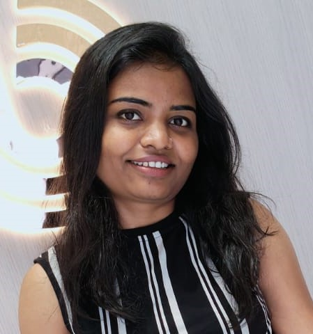

Supriya Gedam

Summary
Experienced Low-Code/No-Code Developer with 3+ years of expertise in designing, developing, and
implementing applications using the Unqork platform. Proven track record of delivering high-quality, scalable
solutions on time. Seeking to leverage my technical skills in a dynamic organization.
Education
- Bachelor's Degree in Information Technology (2017-2019)
- Master of Computer Application (2019-2021)
Work Experience
Trainee Software Engineer - Persistent Systems
Nov 2021 - Dec 2022
- Acquired foundational skills in Unqork-based application
development, focusing on scalable and efficient solutions.
- Designed and implemented modules to meet enhancement
requests, adhering to best practices.
- Worked on applications utilizing Unqork, APIs, CSS, and HTML,
improving end-user experiences.
-
Software Engineer - Aiden AI Pvt Ltd
Apr 2023 - Present
- Provide ongoing support for projects, interacting directly with
clients to gather requirements and implement solutions using
the Unqork platform.
-
Worked on projects involving workflows and API integrations to
streamline processes and improve functionality.
- Conducted unit testing to ensure high-quality deliverables,
consistently meeting deadlines and project expectations.
- Proactively resolved bugs and implemented fixes to maintain
optimal application performance and reliability.
Skills
-
Unqork
- HTML, CSS
- Agile Methodology, Jira
Certifications
- Certified Associate Configurator in Unqork
- Certified Professional Configurator in Unqork
- Unqork Agile Framework (UAF) Skill
Others